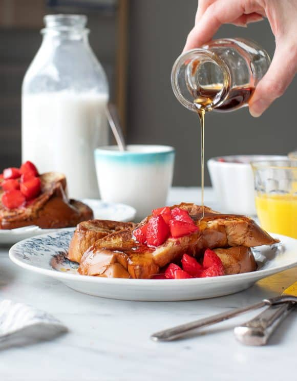

French Toast

Description
Start your day off with a full stomach with this recipe of french toast.
Ingredients
- 4 eggs
-
2cups of milk
- 2 teaspoons of cinnamon
- 1/4 teaspoon of cardamom
- Pinch of sea salt
- 8 slices of bread
Steps
- Using a large bowl, whisk together the eggs, milk, cinnamon, salt and cardamom
- Dip the slices of bread into the mixture, putting the soaked bread slices on a large plate after.
- Using a non-sticky skillet, cook the soaked bread slices until they're golden brown. Do this for 2 minutes on each side of the bread.